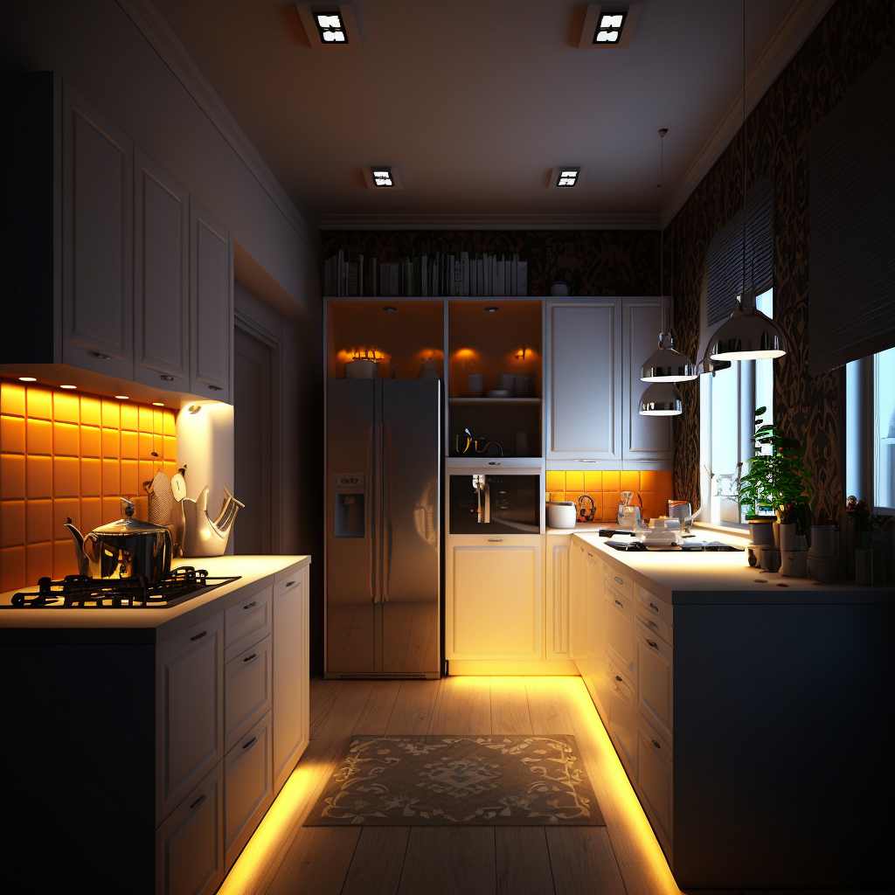
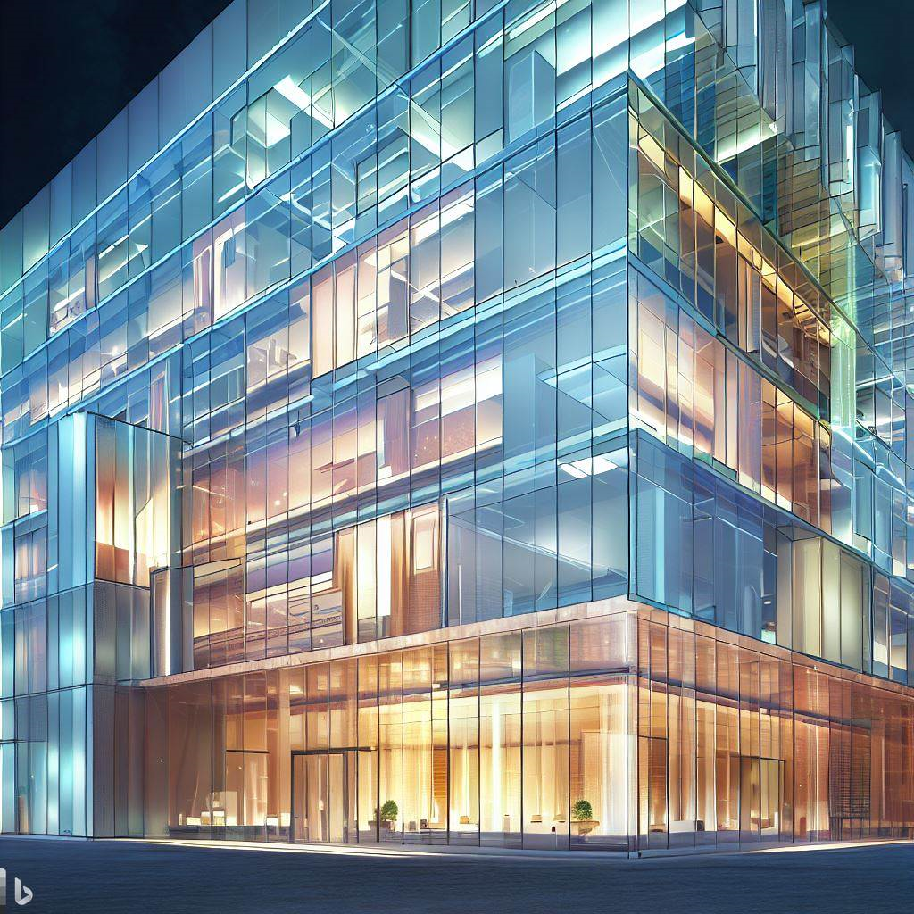
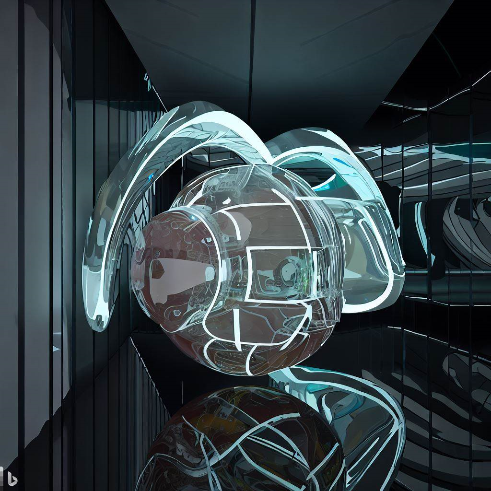

How ChatGPT and Midjourney can Contribute to Lighting Designers and their Lighting Design
Lighting design is an important aspect of designing any space. Good lighting design can enhance the mood and ambiance of a room, improve visibility, and even boost productivity. However, creating a lighting design that accomplishes all of these goals can be a challenging endeavor. Lighting design is an essential aspect of architectural design, and it requires a great deal of skill and creativity to create a lighting plan that complements a space or building. Fortunately, with the advancements in artificial intelligence (AI), designers can now use programs like ChatGPT and Midjourney to assist in the lighting design process.

ChatGPT and Midjourney are artificial intelligence programs that generate replies or images from natural language descriptions, called "prompts." Similar to OpenAI's DALL-E and Stable Diffusion, Midjourney is created by a San Francisco-based independent research lab. Currently, Midjourney is only accessible through a Discord bot on their official Discord server, but they are working on a web interface. On the other hand, ChatGPT is accessible through various platforms and can be used to generate text and even images.
To generate images using ChatGPT and Midjourney, users input prompts through a command, and the program generates a set of replies or images. Lighting designers can utilize these replies or images as a reference when creating a lighting plan for a space.
ChatGPT's Contribution to Lighting Design
ChatGPT is an AI program that uses natural language processing to generate ideas and responses to user prompts. When it comes to lighting design, ChatGPT can assist designers in generating ideas for a lighting plan. Designers can input their specifications for a space or a particular mood, and ChatGPT can generate ideas based on that information.
One of the major advantages of ChatGPT is its ability to interpret user prompts. Designers no longer need to spend hours researching or developing ideas; they can simply input their requirements into ChatGPT and receive suggestions immediately. Furthermore, ChatGPT can learn over time and improve its responses to specific prompts. Additionally, ChatGPT can offer suggestions for lighting placement, taking into account the different lighting layers such as the task layer, focal layer, ambient layer, decorative layer, and daylight layer.
Overall, ChatGPT's ability to generate lighting design ideas quickly and efficiently can save designers a significant amount of time and effort.
Midjourney's Contribution to Lighting Design
Midjourney is another AI program that can assist lighting designers. Midjourney can generate images from natural language prompts that designers can use as a reference in creating a lighting plan. Each layer of lighting mentioned earlier can be designed using images generated by Midjourney to give the customer a visual idea of the end product.

One significant benefit of using Midjourney is the ability to generate images quickly and efficiently. Lighting designers can save time and effort by using these images as a starting point and modifying them to fit their needs. Another benefit of using Midjourney is the ability to experiment with different lighting options without the need for physical prototypes. Lighting designers can input various prompts and generate multiple sets of images, allowing them to compare and contrast different lighting options.
For example, a designer could input a prompt such as "create a lighting plan for a modern office space," and Midjourney could generate images of what that space might look like with different lighting parameters, which the designer could then use as reference.
Midjourney's ability to generate images from natural language prompts can provide lighting designers with a valuable tool to help them create lighting plans that meet their clients' needs.
Combining ChatGPT and Midjourney in Lighting Design
While both ChatGPT and Midjourney are powerful tools on their own, they can work together to create an even more efficient lighting design process. The use of artificial intelligence programs such as ChatGPT and Midjourney can contribute significantly to the lighting design process. These programs can assist lighting designers in creating a well-composed lighting plan by providing visual references and suggestions for lighting placement.
ChatGPT can generate ideas for lighting plans, while Midjourney can generate images to give designers a better idea of what the end product might look like.
Designers can use ChatGPT to provide specifications for the space, and Midjourney can generate images based on those specifications. By working together, ChatGPT and Midjourney can enhance the lighting design process by providing designers with both ideas and visual aids.
Examples of ChatGPT and Midjourney in Lighting Design
The integration of ChatGPT and Midjourney has the potential to revolutionize the way lighting designers approach their work. Here are some applications of these AI tools in lighting design.
Living Room Lighting Design
In living room lighting design, layers of lighting are important to consider. The ambient layer should be soft and diffused to create a warm and inviting atmosphere. This layer can be achieved through the use of wall sconces or floor lamps. The task layer can be added through the use of table lamps or pendant lighting over a seating area. The focal layer can be achieved through highlighting a piece of artwork or a decorative object with accent lighting. In addition, the decorative layer can be added through the use of decorative lighting fixtures, such as chandeliers or statement pendant lighting.
Kitchen Lighting Design
Kitchen lighting design is important for both functionality and ambiance. The task layer is important in the kitchen to ensure proper lighting for cooking and food preparation. Under-cabinet lighting can provide task lighting for countertops and workspaces. The ambient layer can be achieved through the use of recessed lighting or flush mount ceiling fixtures. The decorative layer can be added through the use of pendant lighting over an island or decorative chandeliers.

Office Lighting Design
In office lighting design, the task layer is essential to ensure proper lighting for workspaces. This can be achieved through the use of desk lamps or overhead lighting. The ambient layer can be achieved through the use of ceiling fixtures or recessed lighting. The focal layer can be achieved through highlighting artwork or decorative objects with accent lighting. In addition, the decorative layer can be added through the use of decorative lighting fixtures, such as unique floor lamps or chandeliers.

Bathroom Lighting Design
Bathroom lighting design is important for both functionality and ambiance. The task layer is important in the bathroom for grooming and applying makeup. This layer can be achieved through the use of vanity lighting or sconces placed on either side of a mirror. The ambient layer can be achieved through the use of recessed lighting or ceiling fixtures. The focal layer can be achieved through highlighting a decorative object or a unique feature, such as a tiled wall, with accent lighting.

Building Lighting Design
Building lighting design is important for safety and aesthetic purposes. The ambient layer can be achieved through the use of recessed lighting or floodlights to illuminate the building's exterior. The focal layer can be achieved through highlighting architectural features, such as columns or archways, with accent lighting. In addition, the decorative layer can be added through the use of unique lighting fixtures, such as lanterns or decorative wall sconces.
Benefits of using ChatGPT and Midjourney
Faster Design Process Using ChatGPT and Midjourney can significantly speed up the lighting design process. Designers can simply input their ideas and prompts, and the AI will generate a range of images and suggestions. This can save time that would otherwise be spent on manual work, allowing designers to focus on other aspects of their project.
Increased Efficiency With AI, designers can get immediate feedback on the effectiveness of their lighting design choices. This can lead to more efficient design choices and help them to make informed decisions. Additionally, ChatGPT and Midjourney can assist in the organization and management of large-scale lighting projects.
Improved Flexibility ChatGPT and Midjourney can offer lighting designers more flexibility in their work. They can provide designers with a range of options and variations that they may not have thought of otherwise. This can help designers to create unique and dynamic lighting designs that truly enhance the aesthetic and functionality of a space.
Enhanced Creativity By using AI tools like ChatGPT and Midjourney, lighting designers can push their creative boundaries and explore new possibilities. They can experiment with different lighting combinations and styles without committing to a specific design. This can lead to more innovative and original lighting design solutions.
Future of ChatGPT and Midjourney in Lighting Design
As AI technology continues to advance, it is likely that ChatGPT and Midjourney will only become more powerful tools for lighting designers. Advancements could include improved accuracy in interpreting user prompts, higher quality image generation, and even the ability for these programs to collaborate seamlessly with other design tools.
With these potential advancements, ChatGPT and Midjourney have the potential to revolutionize the way lighting designers approach their work.
Conclusion
The integration of AI tools like ChatGPT and Midjourney has the potential to revolutionize the field of lighting design. With the ability to generate a range of ideas, variations, and feedback in a fast and efficient manner, lighting designers can enhance their creativity, flexibility, efficiency, and overall design quality. While AI tools cannot replace the expertise and intuition of a human designer, they can certainly supplement it and make the design process more effective and dynamic. Lighting design can be a challenging process, but with the help of AI programs like ChatGPT and Midjourney, designers can now generate ideas and visualize what their end product might look like more easily and efficiently than ever before.
By using ChatGPT to generate lighting design ideas and Midjourney to generate images based on those ideas, designers can create a more well-rounded and polished lighting plan. As advancements in AI technology continue to be made, the future of lighting design looks brighter than ever before.
FAQs:
- What is ChatGPT?
- What is Midjourney?
- How can ChatGPT contribute to lighting design?
- How can Midjourney contribute to lighting design?
- How can ChatGPT and Midjourney work together in lighting design?
- Can ChatGPT and Midjourney completely replace human lighting designers?
- Are there any limitations to using AI tools like ChatGPT and Midjourney in lighting design?
ChatGPT is an AI program that uses natural language processing to generate ideas and responses to user prompts.
Midjourney is an AI program that can generate images from natural language prompts.
ChatGPT can assist lighting designers in generating ideas for a lighting plan by interpreting user prompts and generating responses based on those prompts.
Midjourney can generate images from natural language prompts that can be used as a visual aid in creating a lighting plan.
ChatGPT can provide specifications for a space, and Midjourney can generate images based on those specifications, providing designers with both ideas and visual aids to refine their lighting plan.
No, AI tools like ChatGPT and Midjourney cannot replace the expertise and intuition of human designers. However, they can supplement the design process and enhance its efficiency and creativity.
While AI tools like ChatGPT and Midjourney can enhance the efficiency and creativity of the design process, they cannot replace the expertise and intuition of a human designer. Additionally, the quality of the output is only as good as the quality of the input prompts, and designers must be careful to use clear and specific prompts to get the best results
This text was written with help of ChatGPT and the figures were generated using Midjourney and DALL-E.
If you're interested in learning more about this research, feel free to reach out!
Rik Spieringhs